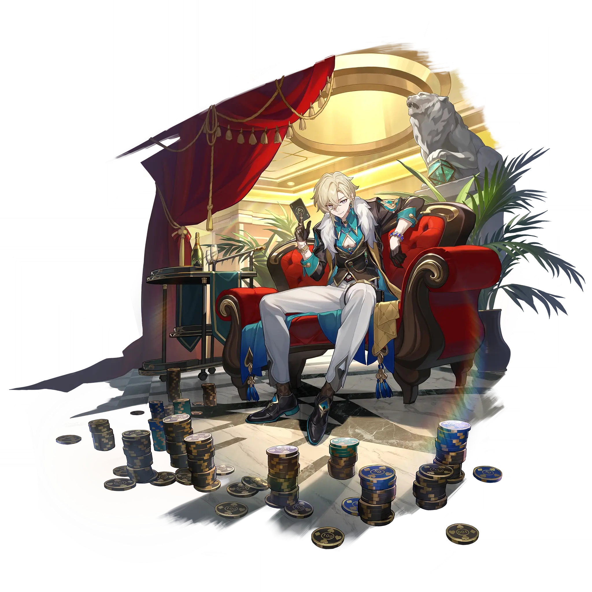

Aventurine
Best Aventurine build guide for Honkai Star Rail. See Aventurine's best Relics, Light Cones, teams, Eidolons, Trace priority, and how to play Aventurine.
🔍 Detail Skill
Semua skill aktif dan pasif beserta efeknya.
Deals Imaginary DMG equal to #1[i]% of Aventurine's DEF to a single target enemy.
Provides all allies with a Fortified Wager shield that can block DMG equal to #1[i]% of Aventurine's DEF plus #2[i], lasting for #3[i] turn(s). When repeatedly gaining Fortified Wager, the Shield effect can stack, up to #4[i]% of the Shield provided by the current Skill.
The Effect RES increases by #4[i]% for a single ally with Fortified Wager. And when this allied character gets attacked, Aventurine gains 1 point of Blind Bet. When Aventurine has Fortified Wager, he can resist Crowd Control debuffs. This effect can trigger again after #5[i] turn(s). Aventurine additionally gains #1[i] point(s) of Blind Bet after getting attacked. Upon reaching 7 points of Blind B
After using the Technique, 1 of the following effects will be granted: There is a chance for DEF to increase by #1[i]%. There is a high chance for DEF to increase by #2[i]%. There is a small chance for DEF to increase by #3[i]%. When this Technique is used repeatedly, the acquired effect with the highest buff value is retained. When the next battle starts, increases all allies' DEF by the correspo
⚔ Light Cone Terbaik
Diurutkan dari yang paling kuat. Persentase menunjukkan performa relatif terhadap pilihan terbaik.
💎 Relic Set Terbaik
Set terbaik untuk karakter ini, diurutkan berdasarkan prioritas.
📊 Stat Utama
Stat yang dicari pada tiap slot.
👥 Tim yang Direkomendasikan
Karakter yang sering dipasangkan bersama Aventurine.
 Feixiao
Feixiao
 Dr. Ratio
Dr. Ratio
 Topaz & Numby
Topaz & Numby
 Robin
Robin
 Acheron
Acheron
 Silver Wolf • Lv. 999
Silver Wolf • Lv. 999
🔗 Lanjutkan
Build ini dirangkum dari Prydwen Institute. Starwise tidak menghitung sendiri. Angka bisa berubah setelah patch atau karakter baru rilis.